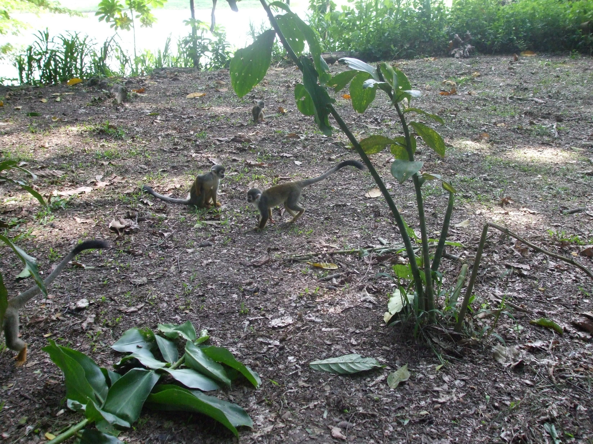
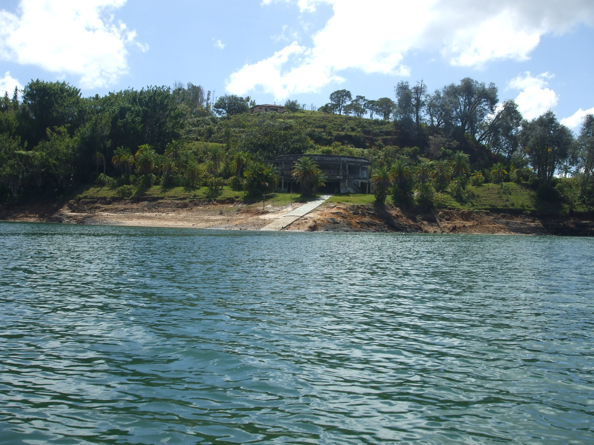
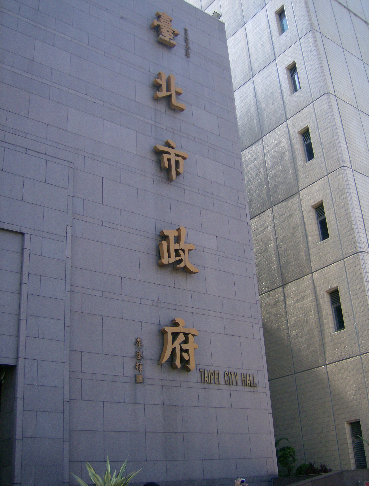
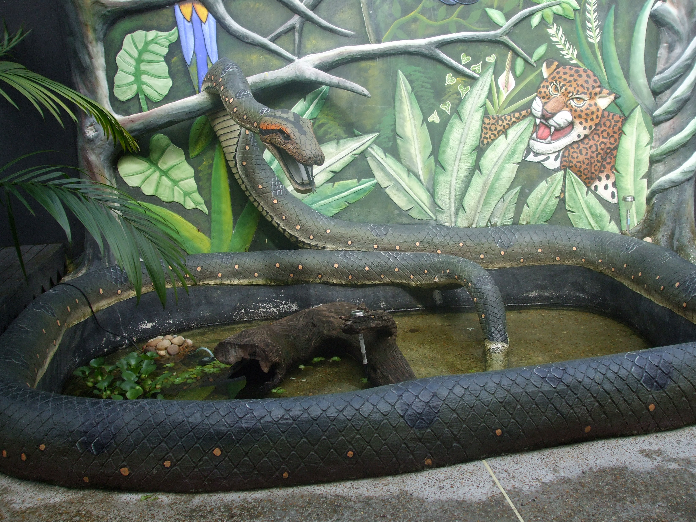
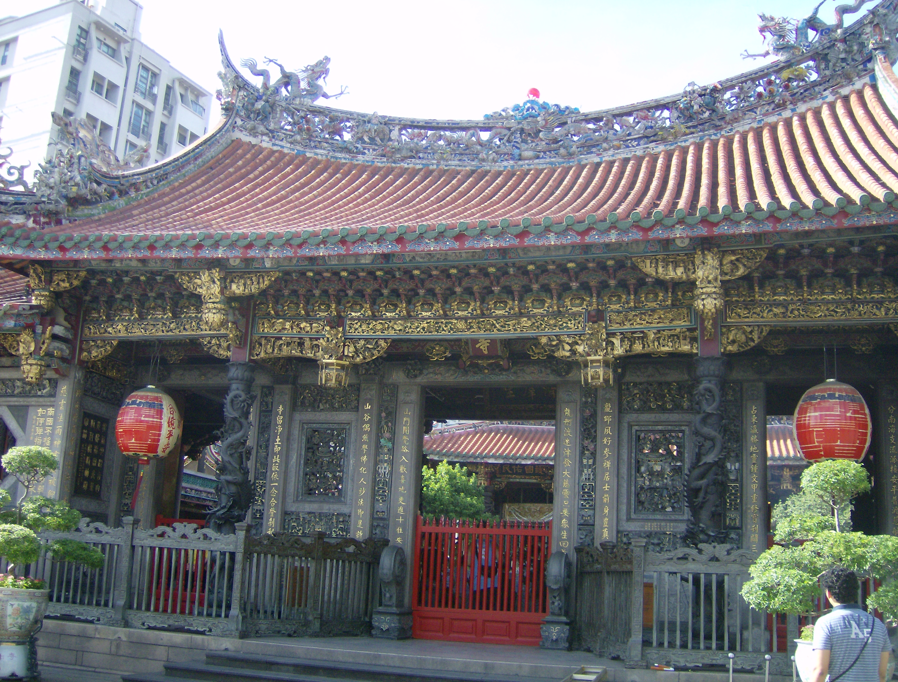
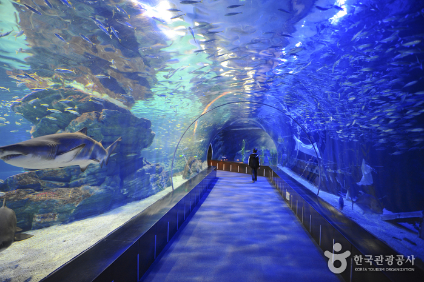
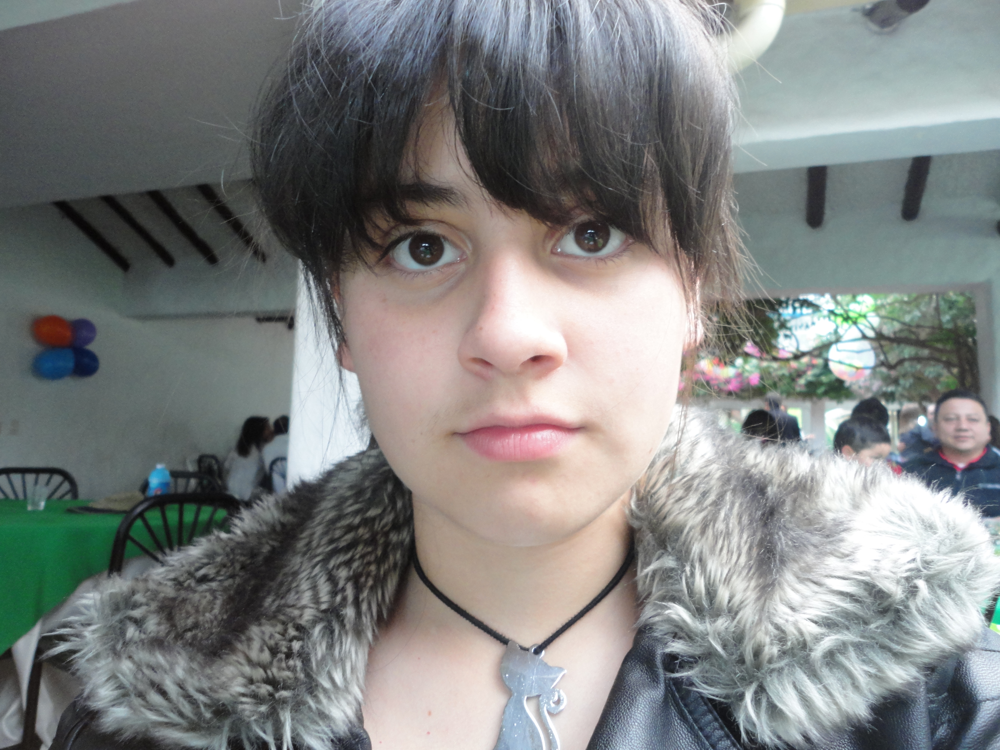

A través de nuestros ojos







Si eres amante del mundo acuatico definitivamente tienes que ir a este acuario ubicado en Busan, tiene muchas zonas interactivas entre ellas están las salas de simulación, los restaurantes tematicos, salas de descanso, tienda de souvenirs,etc. también se destacan, la sala ecológica subtropical, la sala de las nutrias, de los pingüinos, de las medusas, de los organismos submarinos que viven en las profundidades, etc., entre otras magníficas escenas para disfrutar.
puedes tener la experiencia de ver el acuario a través de un tunel submarino de 80 m de largo, con una dimensión de 270 y 90 grados, también puedes nadar con todas las especies de tiburones, peces y arrecifes de corales que alli se encuentran.
Animate a ir y ver el mundo acuatico desde otra perspectiva, sintiendote como parte de el, te prometo que no te arrepentiras.
Busan Sea Life Aquarium
04 de Agosto de 2016today
Busan, Corea del surlocation_on
Si eres amante del mundo acuatico definitivamente tienes que ir a este acuario ubicado en Busan, tiene muchas zonas interactivas entre ellas están las salas de simulación, los restaurantes tematicos, salas de descanso, tienda de souvenirs,etc. también se destacan, la sala ecológica subtropical, la sala de las nutrias, de los pingüinos, de las medusas, de los organismos submarinos que viven en las profundidades, etc., entre otras magníficas escenas para disfrutar.
puedes tener la experiencia de ver el acuario a través de un tunel submarino de 80 m de largo, con una dimensión de 270 y 90 grados, también puedes nadar con todas las especies de tiburones, peces y arrecifes de corales que alli se encuentran.
Animate a ir y ver el mundo acuatico desde otra perspectiva, sintiendote como parte de el, te prometo que no te arrepentiras.

Desierto San Pedro de Atacama
20 de Julio de 2015today
Atacama, Chilelocation_on
Si quieren ver una maravillosa vista de las estrellas en todo su esplendor definitivamente deben ir a este desierto, de dia es un azul cielo despejado casi sin ninguna nube por no decir ninguna, pero al caer la noche es increible como se pueden observar tan detalladamente las estrellas. Nunca en mi vida habia visto un cielo tan despejado para que se vieran esa cantidad de estrellas y que alumbraran todo a su alrededor.
Es el mejor lugar para acampar con tus amigos, familia y pareja para ver las constelaciones, no te olvides de llevar tu telescopio para disfrutar mejor la vista.
Un precioso lugar para crear inolvidables recuerdos.
Animate a vistarlo!

Perfil del autor
Seria divertido irme de mochilera un dia y recorrer diferentes partes de latinoamérica Me encanta viajar y conocer lugares nuevos, siempre que puedo recomiendo los sitios turisticos que me parecen interesantes. Cada fotografia tomada en los viajes es un bonito recuerdo que dura para siempre.